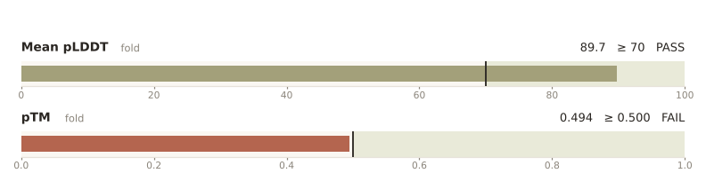
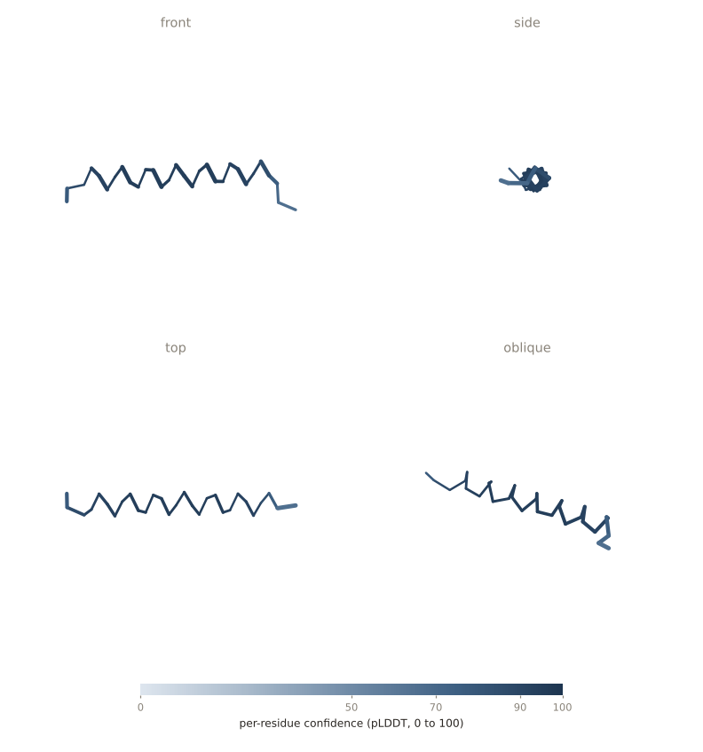
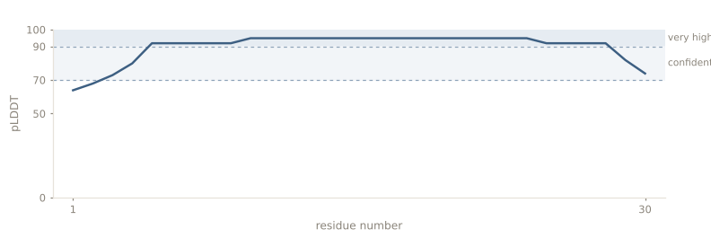
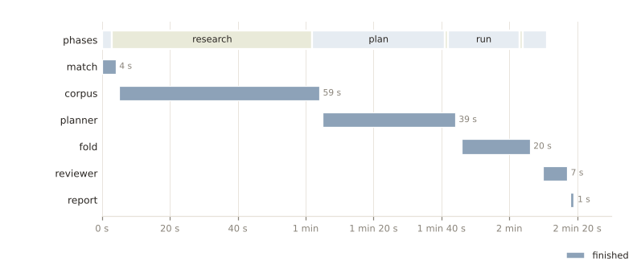

Predict the 3D structure of this single protein chain and report whether the fold is confident.
Outcome
The run failed 1 of 2 checks. pTM was 0.494, below the floor of 0.500.
pLDDT was 89.7, but pTM came in at 0.494, just under the frozen floor of 0.5, so the run failed.
How the pipeline was chosen
No saved skill fitted the task, so a new pipeline was planned from the literature and the tool catalog. The matcher considered 2 saved skills (boltz2_heterodimer_interface, pdb_chain_sequences).
Why no skill was reused
Planning decisions (1)
| Topic | Choice | Sourced |
|---|---|---|
| pTM floor | 0.5 | no |

Metrics

| Check | Observed | Criterion | Status |
|---|---|---|---|
| confident_fold fold.scores.mean_plddt | 89.7 | ≥ 70 | PASS |
| global_fold fold.scores.ptm | 0.494 | ≥ 0.500 | FAIL |
Structure
fold (esmfold, model.pdb)
The model has 30 residues in chain A (30 residues). Mean per-residue confidence is 89.7; 93.3% of residues reach 70 and 80% reach 90.


Study distillation
ESMFold folds a single sequence without an alignment. pTM estimates the TM-score of the predicted structure, and a TM-score of 0.5 is the usual line for a correct fold. None of the papers sets a pTM floor for chains under 50 residues.
Sourced numbers (1)
| Quantity | Value | Context | Source |
|---|---|---|---|
| TM-score at which two structures usually share a fold | 0.5 | fold-level similarity threshold | Xu and Zhang 2010, Bioinformatics |
Guidance
- ESMFold needs only the sequence, so no alignment step is required. (Lin et al. 2023, Science)
- Read pTM as a predicted TM-score of the whole fold. (Jumper et al. 2021, Nature)
Papers (3)
| Title | Year | Citations | Full text read |
|---|---|---|---|
| Evolutionary-scale prediction of atomic-level protein structure with a language model 10.1126/science.ade2574 | 2023 | 4757 | abstract only |
| Highly accurate protein structure prediction with AlphaFold 10.1038/s41586-021-03819-2 | 2021 | 37040 | abstract only |
| How significant is a protein structure similarity with TM-score = 0.5? 10.1093/bioinformatics/btq066 | 2010 | 960 | abstract only |
PaperQA answer to: Which tool and settings fit a single-chain fold from sequence alone?
Which tool and settings fit a single-chain fold from sequence alone?
ESMFold predicts structure directly from one sequence, without a multiple sequence alignment.
Drawn from 1 excerpt of 1 paper.
PaperQA answer to: What confidence values mark a trustworthy fold?
What confidence values mark a trustworthy fold?
pTM estimates the TM-score of the prediction, and a TM-score of 0.5 is the usual line for two structures sharing a fold. The papers set no pTM floor for very short chains.
Drawn from 2 excerpts of 2 papers.
Timeline
The longest phase was research at 59 s.

Lessons recorded
- A pTM floor of 0.5 is too strict for a 30-residue chain. Short chains score low pTM even when pLDDT is high, so use about 0.3 below 50 residues.